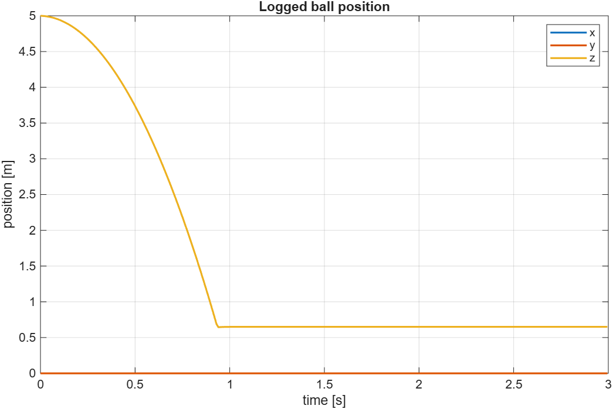

Data logger
Class phx.Logger | Superclass: phx.base.Object
phx.Logger records the progress of any property of any physical
object during the simulation. One logger can record one property of multiple objects, multiple
properties of one object, or multiple properties of multiple objects — in the last case all
objects must have that set of properties. Each unique object–property combination becomes a
channel: read all recorded data from the Data property, or
one channel at a time with getChannel. List the channels and their
IDs with dispChannels.
logger = phx.Logger(parents,"Parameters",params) creates a logger
which records the progress of the properties named in params for all
objects given by parents.
| Argument | Type | Description |
|---|---|---|
| parents | phx object array or cell array | The objects whose properties are recorded. A cell array may mix objects of different classes. |
| Property | Type / Default | Description |
|---|---|---|
| Parameters | 1×N string | List of object properties to record during the simulation. |
| Frequency | 10 | Desired recording frequency, Hz (the resulting frequency may be limited by the simulation step). |
| Time | M×1 double (read-only) | Time axis of the recorded channels (the time step may be irregular if the simulation step and the recording frequency are not divisible). |
| Data | M×K double (read-only) | Common matrix of values of all channels, one row per sample. |
| Function | Description |
|---|---|
| getChannel | Return the recorded data of one channel: y = getChannel(logger, channID). |
| dispChannels | Display the list of channels and their IDs for use with getChannel. |
clf; view(3); axis equal; grid on; camlight headlight; b = phx.Body("Position", [0 0 5], "Shape", {"Sphere"}); phx.Body("Type", "static", "Shape", {"Box", "Size", [6 6 0.3]}); log1 = phx.Logger(b, "Parameters", "Position", "Frequency", 100); sim = phx.Simulation; sim.step(3, 600, 1); plot(log1.Time, log1.Data); xlabel("time [s]"); ylabel("position [m]"); legend("x","y","z");

log2 = phx.Logger(b, "Parameters", ["Position", "LinearVelocity"]); sim.step(2, 400, 1); log2.dispChannels; % 1 - Object1.Position, 2 - Object1.LinearVelocity v = log2.getChannel(2); % velocity samples only delete(sim);